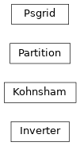

API Documentation¶
CADMium Package¶
CADMium A short description of the project.
Functions¶
|
Generates an array of solvers of shape Nmo[0]xNmo[1] |
Classes¶
|
|
|
Handles a standard kohn sham calculation |
|
Handles calculation of all efective partiions. |
|
Generates spheroidal grid |
Class Inheritance Diagram¶
